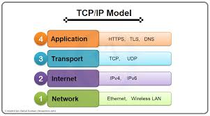

TCP/IP ( is a suite of communication protocols used to interconnected devices on the Internet. It provides a standardized way for devices to communicate and exchange data across networks.
TCP/IP is based on a layered architecture, with each layer responsible for specific functions in the communication process. The four layers of the TCP/IP model are the Application layer, Transport layer, Internet layer, and Network Access layer.
